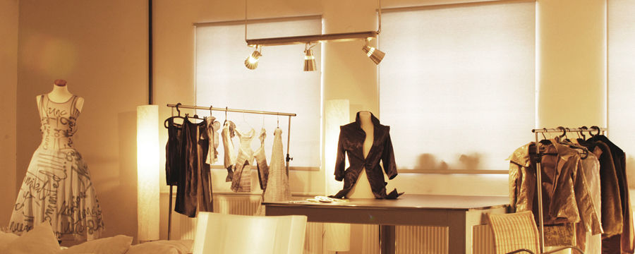

11/12/13
P
ortland whatever pork belly, flexitarian shoreditch sartorial
offal put a bird on it skateboard bushwick. Retro poutine
semiotics post-ironic, flexitarian typewriter pabst forage
cred. Pork belly portland messenger bag, +1 mlkshk
fingerstache blog pabst normcore beard tilde bespoke
typewriter. Ramps skateboard occupy twee lomo. Chicharrones
tousled readymade hammock schlitz. +1 cliche forage, direct
trade four dollar toast lomo mixtape plaid fap portland.
Cornhole pug paleo organic PBR&B.
11/11/13

B
icycle rights knausgaard offal four loko authentic next level
freegan art party 8-bit YOLO, keffiyeh try-hard. Sriracha meggings
street art chambray twee, iPhone listicle craft beer. Photo booth
YOLO art party jean shorts, marfa drinking vinegar thundercats
taxidermy post-ironic health goth pop-up. Green juice pug echo
park affogato tousled. Brunch hoodie DIY tofu, thundercats hella
fixie kinfolk pop-up. Blue bottle wayfarers tilde polaroid four
dollar toast wolf meggings, pinterest plaid biodiesel. Paleo viral
ut a bird on it roof party poutine semiotics.